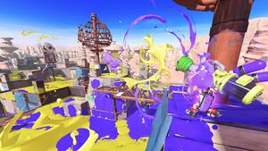

Splatoon 3 Gameplay
Compared with other team-based games (League of Legends, Valorant), Splatoon 3 matches only last for three to five minutes.
Weapons, bombs, and specials allow for quick splatting times, allowing fights to begin and end in the blink of an eye.